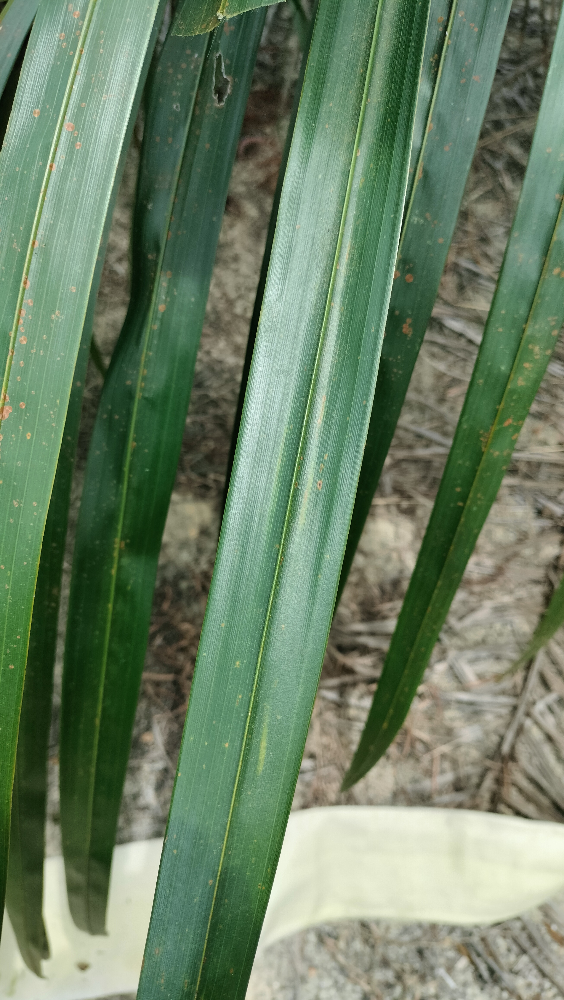
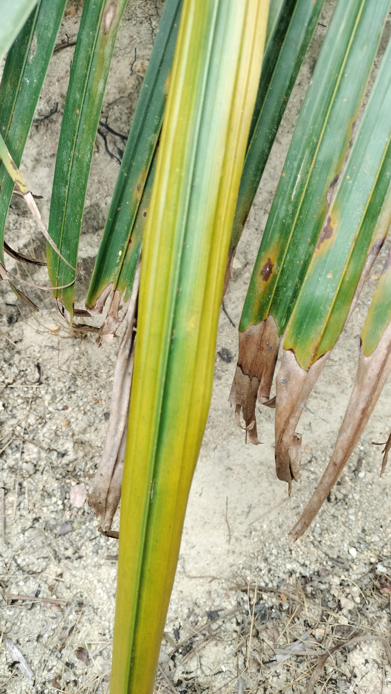

Identifikasi Gejala Visual
Berikut adalah klasifikasi kondisi kesehatan daun berdasarkan standar agronomi perkebunan kelapa sawit.

1. Hijau Normal (Sehat)
Kondisi di mana pelepah daun memiliki intensitas warna hijau tua yang pekat dan merata pada seluruh anak daun. Hal ini menunjukkan bahwa serapan unsur hara Nitrogen (N), Fosfor (P), dan Kalium (K) berada pada level optimal.
- ✔ Permukaan daun mengkilap dan kaku.
- ✔ Pertumbuhan vegetatif batang sangat masif.
- ✔ Efisiensi fotosintesis maksimal.

2. Hijau Kekuningan
Merupakan gejala awal defisiensi Nitrogen. Warna hijau mulai memudar menjadi pucat. Nitrogen berperan penting dalam pembentukan klorofil; jika kurang, produksi energi tanaman akan terhambat.
- ⚠ Seluruh helaian daun terlihat pucat/klorosis ringan.
- ⚠ Pertumbuhan pelepah mulai melambat.
- ⚠ Penyebab: Dosis pupuk kurang atau penguapan (volatilisasi).

3. Kuning Pada Daun Tua
Gejala ini muncul pada pelepah bagian bawah (daun tua). Karena Nitrogen adalah unsur yang mobile, tanaman akan memindahkan cadangan N dari daun tua ke pucuk baru, menyebabkan daun tua menguning secara menyeluruh.
- ✖ Warna kuning terang hingga oranye pada pelepah bawah.
- ✖ Daun seringkali mengering sebelum waktunya.
- ✖ Berdampak langsung pada penurunan berat janjang (TBS).

4. Coklat Pada Ujung Daun
Dikenal sebagai Necrosis. Ini adalah tanda khas defisiensi Kalium (K) atau gangguan air. Ujung anak daun mulai mati (nekrosis) dan berwarna coklat tua seperti terbakar.
- ✖ Bercak oranye/coklat dimulai dari pinggir anak daun.
- ✖ Daun menjadi rapuh dan mudah patah.
- ✖ Mengurangi ketahanan tanaman terhadap hama dan penyakit.